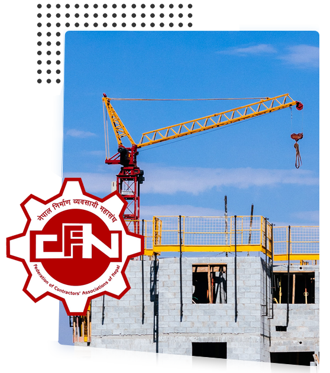

Introduction

The Federation of Contractors' Associations of Nepal (FCAN), Morang District Chapter is the official representative body of construction contractors in Morang district. Established with the vision of promoting and protecting the interests of construction professionals, we have been serving the construction industry since 1995.
FCAN Morang works as a bridge between contractors, government agencies, and other stakeholders in the construction sector. We advocate for fair policies, provide professional development opportunities, and ensure adherence to quality standards in construction projects across Morang district.
Our History
Establishment
FCAN Morang was established with 25 founding members to represent contractors' interests in the district.
First Office
Acquired permanent office space in Biratnagar to better serve member contractors.
Membership Growth
Membership crossed 300 contractors, becoming the largest construction association in Province 1.
Post-Earthquake Reconstruction
Played crucial role in coordinating reconstruction efforts after the Gorkha earthquake.
Digital Transformation
Launched online services and digital member portal for improved service delivery.
Our Vision
To be the leading voice of construction professionals in Morang, promoting excellence, innovation, and sustainable development in the construction industry.
Our Mission
To empower construction contractors through advocacy, capacity building, and networking while ensuring quality, safety, and ethical standards in construction projects.
Our Values
- Integrity & Ethics
- Professional Excellence
- Member Service
- Innovation
- Sustainability
Objectives
Protect Members' Interests
Advocate for contractors' rights and fair business practices with government and stakeholders.
Capacity Building
Provide training, workshops, and skill development programs for member contractors.
Networking
Facilitate networking opportunities among contractors, suppliers, and government agencies.
Policy Advocacy
Participate in policy formulation and represent contractors in construction-related discussions.
Quality Assurance
Promote adherence to construction standards, codes, and safety regulations.
Business Development
Support members in accessing business opportunities and tender information.
Jurisdiction
FCAN Morang District Chapter operates across all municipalities and rural municipalities of Morang district, including:
Municipalities
- Biratnagar Metropolitan City
- Letang Municipality
- Belbari Municipality
- Pathari-Sanischare Municipality
- Rangeli Municipality
- Sunawarshi Municipality
- Ratuwamai Municipality
- Urlabari Municipality
- Sundarharaicha Municipality
Rural Municipalities
- Gramthan Rural Municipality
- Jahada Rural Municipality
- Katahari Rural Municipality
- Dhanpalthan Rural Municipality
- Kerabari Rural Municipality
- Miklajung Rural Municipality
- Budhiganga Rural Municipality
- Kanepokhari Rural Municipality
Constitution & Bylaws
FCAN Morang operates under a formal constitution that governs our operations, membership, and decision-making processes. Our bylaws ensure transparency and democratic functioning of the organization.
Why Join FCAN Morang?
Representation
Your voice in policy discussions with government agencies
Business Opportunities
Access to tender information and networking events
Training & Development
Regular workshops and skill enhancement programs
Legal Support
Guidance on contracts and dispute resolution
Industry Updates
Latest construction laws, regulations, and standards
Certification
Recognition as a registered FCAN contractor
Ready to Join?
Become part of Morang's leading construction professionals network
Apply for Membership